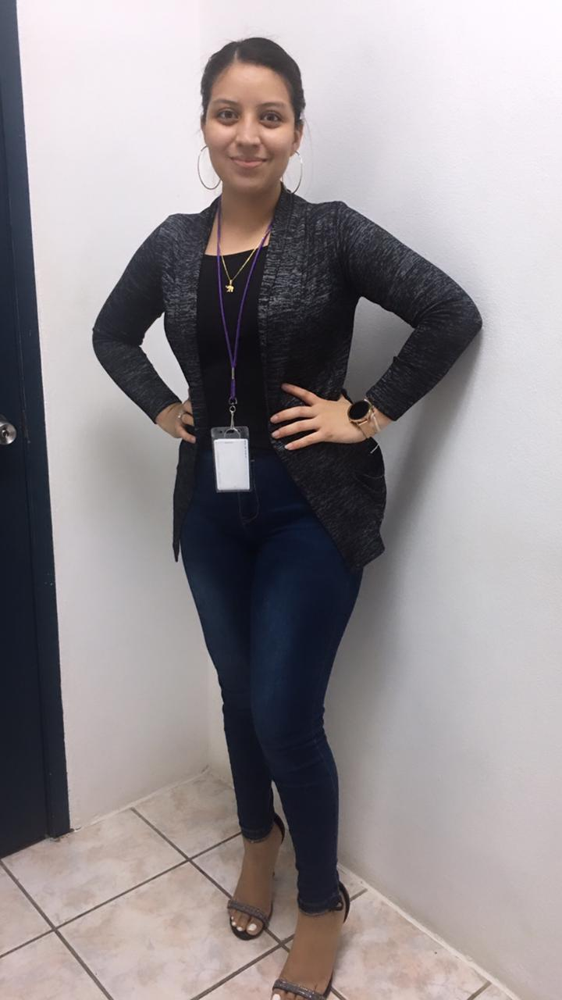

About Me
 Martita De La Fuente is currently working towards an Associates degree in Information Technology at the University of Belize. She completed her studies at Sacred Heart College in 2020, majoring in Science studies, and served as the Vote of Thanks at Howard Smith Nazarene School. Ms. De La Fuente is known for being a friendly, responsible, and dedicated individual. Moreover, she is fluent in three languages: English, Spanish, and Mandarin. Additionally, Martita manages her own jewelry business.